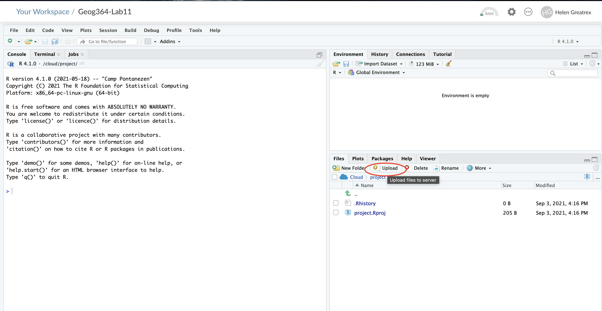
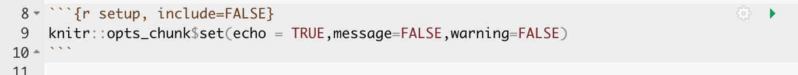
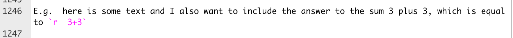
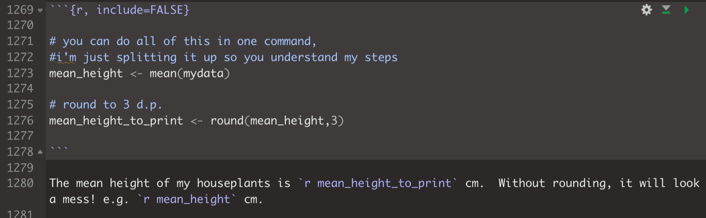
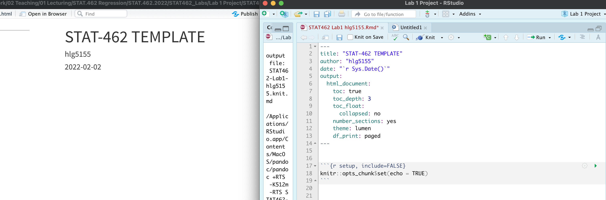
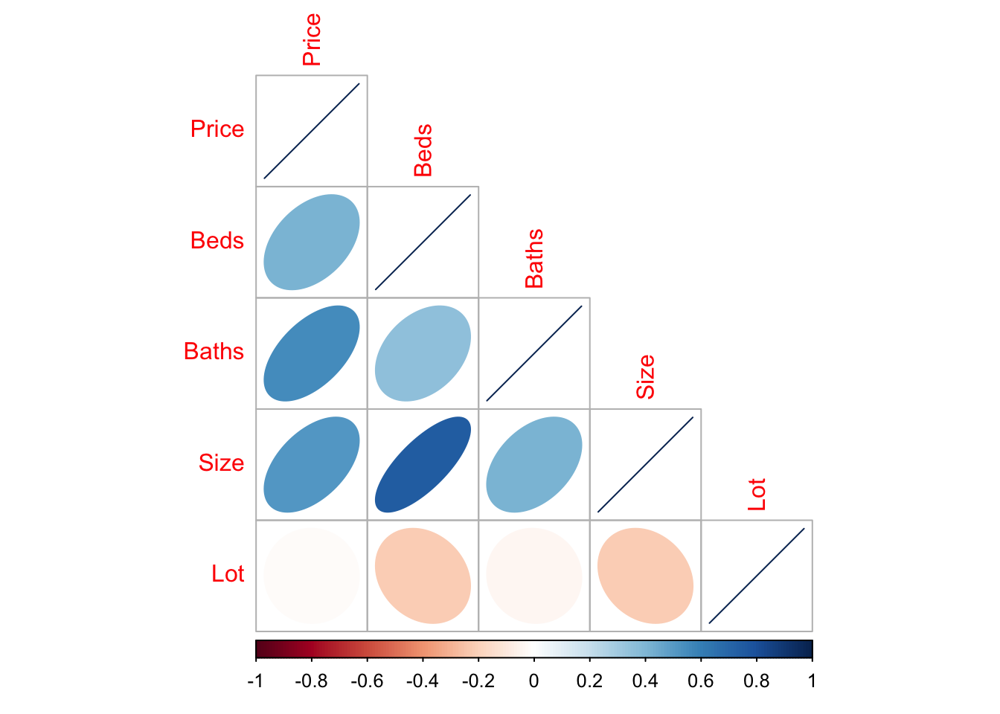
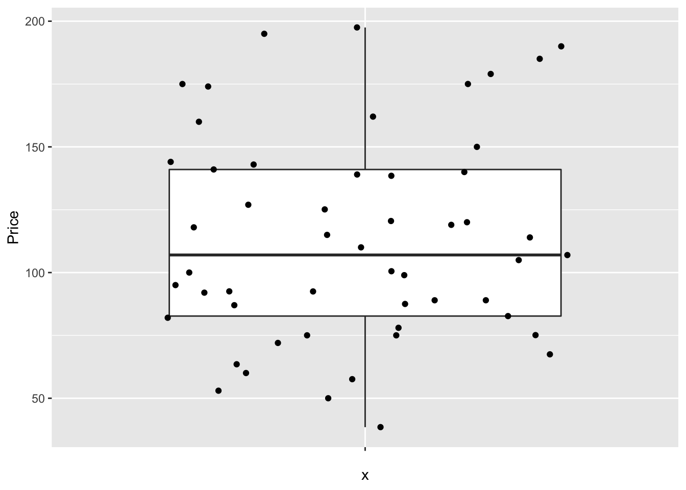
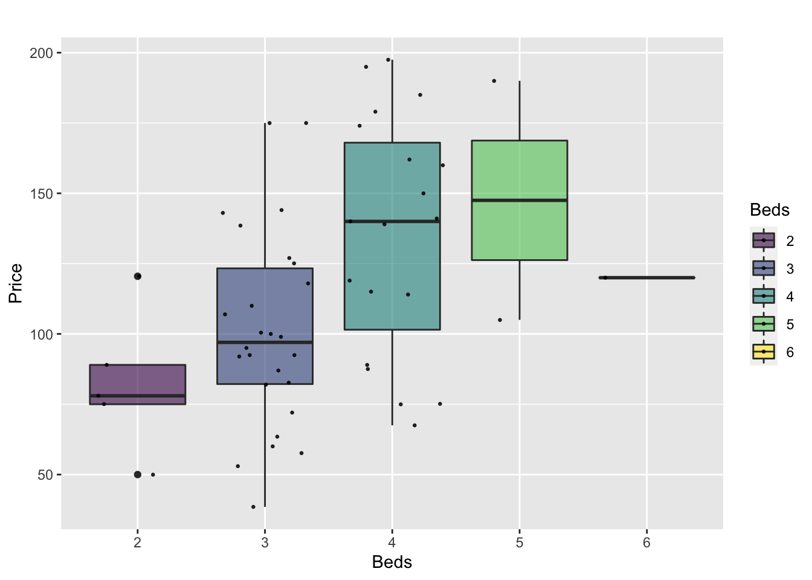

1 Accessing R & Settings
What are R and R-Studio?
How do I transfer things to and from R-Studio cloud?
What is a package and how do I install them?
1.1 What are R and R-Studio?
R is a free, open source statistical programming language. It is useful for data cleaning, analysis, and visualization. By a “programming language”, I mean it is a collection of commands that you can type into the computer in order to analyse and visualise data. The easiest way I find to think about R is that it is literally a language, like Spanish or Hindi, that is spoken by your computer. Learning R means learning vocabulary and grammar in order to communicate. It also means it will get easier with experience and practice..
When you install R on your computer, you are essentially instantly teaching your computer to “speak in R” with some very basic Notepad-likesoftware where you can enter commands.

The basic R console. You write in blue, the computer replies in black. The > means it is waiting for a command
More recently, R-studio has been designed as a piece of software to make it easier to programme in R. It’s Microsoft Word is compared to notepad with many more options. For example, you can easily see help files, run code, see your output and create outputs like this lab book! R-Studio also allows us to make interactive documents called R-Markdown files.

R-studio is much more sophisticated
To learn more about R studio, see here: https://www.rstudio.com/products/rstudio/ (1 minute video), or a slightly longer one here:
1.2 Accessing R & R-Studio
For this course you will need TWO pieces of software, one called R and one called R studio. You have four options:
- Installing on your own computer (free and recommended)
- R-Studio Cloud - you can access R studio online, but only a certain number of hours are free
- The Penn State TLT server: (Not recommended as often crashes and loses work)
- Lab computers (not recommended, they are out of date and R will fill up your U-Drive)
More details here for each of them:
1.2.1 On your computer
R is free and having it on your own computer will give you a lot more freedom to complete the labs, especially if there is social distancing later in the semester.
“Your R AND R-Studio MUST be up to date, or things wont’ work. R should be a minimum of 4.1.2 (2021-11-01) –”Bird Hippie” and R-studio a minimum of Version 2021.09.1”
If you already have R and/or R-Studio, it is very important you update both of them to the most recent version. The easiest way to do this is to first uninstall both programmes, then re-install fresh. If you are worried this will affect another class, chat with Dr Greatrex before starting out.
To install R:
On a windows machine, go to: https://cloud.r-project.org/bin/windows/base/ , download R v 4.1.1 and double click to install (click next through all the options)
On a Mac, go to: https://cloud.r-project.org/bin/macosx/ ,download the R v 4.1.1 package and double click to install (click next through all the options)
On anything else: https://cloud.r-project.org/bin
To install R-Studio:
Go to the website here: https://www.rstudio.com/products/rstudio/download/#download and download the version for your operating system.
For Windows Users: Sometimes R asks you to download something called RTools. You can ignore this request as it is not relevant to our course. If you really want the warning to go away, you can download Rtools here https://cran.r-project.org/bin/windows/Rtools/ Follow the instructions closely and ask if you need support.
1.2.2 R-studio cloud
You can access both R and R-studio online without installing anything through R-studio cloud.
This is a website where you can log into an online version of R. and I believe is free for the first 25hrs each month. To do this, make an account at https://rstudio.cloud/plans/free.
You can also easily move files from the Cloud to your Desktop, so for example, you can work on the cloud during lab hours and on your desktop at home. Here’s how
R-Studio Cloud to your computer
- On your computer, go to your STAT462 folder (or make one!)
- Make a subfolder named for that lab e.g. Lab 1
- On your browser, open your project in R-studio cloud
- In the files quadrant/tab, select the checkbox of all the files.
- Click Export. This will zip them into a folder. Save that into your lab folder
- Unzip. Double click the project.RProj file to reopen your lab on your computer

Your computer to R-Studio Cloud
- On your browser, in R studio cloud make a new project and name it something relevant
- Click the upload button
- Navigate to the lab folder on your computer. Choose ONLY the .Rmd file(s) and any input data as appropriate (RStudio-Cloud will make the rest)
- Click on the .Rmd file name in the files in RStudio and you’re good to go



1.2.3 Lab computers/TLT server
There is a free version of R studio cloud hosted by Penn State, that you can access here: https://lat.tlt.psu.edu/home/remoteaccess/oss-web-apps/ . However, to access off campus you will need a VPN and it can be buggy and crash. Be warned and talk to Dr G first.
The lab computers should have a recent version of R, but often the code “packages” you will later install fill up your U-drive. Equally, the version of R outside the lab room is going to be out of date and will likely cause issues. Be warned
If you go down these routes, proceed with care and talk to Dr Greatrex first
1.3 Getting started
Everything in this tutorial is a one-off to get R and R-studio set up.
IMPORTANT! In an easy to access place on your computer, make a folder called STAT-462. This is where ALL your labs are going to live
On your own computer
Now everything is installed, open R-studio (NOT R!).

On R-studio Cloud
Create a new project (button on the top right).

1.3.1 Looking around R-studio
You will be greeted by three panels:
- The interactive R console (entire left)
- Environment/History (tabbed in upper right)
- Files/Plots/Packages/Help/Viewer (tabbed in lower right)

If you have used R before, you might see that there are variables and plots etc already loaded**. It is always good to clear these before you start a new analysis. To do this, click the little broom symbol in your environment tab
1.3.2 Moving the 4 quadrants around
You might find you like the differnet quadrants in a different order. To change this, look at the menu at VERY TOP OF THE SCREEN.
In the
Viewmenu, there is a/Panes/Pane Layoutmenu item, where you can move the on-screen quadrants around. I tend to like the console to be top left and scripts to be top right, with the plots and environment on the bottom - but this is personal choice.There should also be a menu called
Help
Useful for R-studio version and Markdown cheatsheets.
1.3.3 Changing a few settings (LAB 1 IMPORTANT)
R-studio wants to be helpful and will try to re-load exactly where you were in a project when you log back in. This can get confusing, so we are going to turn this off.
ON A MAC: Click on the R-studio menu button on the top left of the screen, then click Preferences.
ON A PC/R-Studio Cloud: Click on Tools-> Global Options -> Preferences
Now:
- UNCLICK “Restore most recently opened project at startup”
- UNCLICK “Restore .RData into workspace on startup”
- Set “Save workspace to .RData on” exit to Never
- UNCLICK “Restore previously open source documents on startup”
- You can also click the appearances tab to change how the screen looks.
2 R-Projects & Packages
2.1 Projects
You need to make a new project before you start EVERY lab!
An R-project is a special folder that will store everything to do with each lab in one place on your computer. This is incredibly useful - it means that if you switch from R-Cloud, to the lab computers, to your laptop, all you have to do is to move the folder and everything will just work. Learn more here.
2.1.1 Creating an R-project
This step is needed for EVERY lab.
2.1.1.0.1 On R-Studio Cloud:
Note, if you are running R-Studio Cloud, you just need to click “Create Project” and name it.
2.1.1.0.2 On your desktop
- If it’s not already open, open R-Studio
- Go to the file menu at the very top and click
New Project - Select
New Directory, thenNew Project - Name your project STAT462-Lab1-PROJECT
- Under “create project as a subdirectory of”, hit the browse button and go inside your STAT-462 main folder (you just need to be in the folder, you don’t need to have selected anything). Press open
- Finally, press
Create Project

2.1.2 How do I know it has worked?
R will change slightly. If you look at the top of the screen in the title bar, it should say STAT462-Lab1-Project R Studio.
The Files tab should have gone to your project folder. Essentially, R-Studio is now “looking” inside your Lab 1 folder, making it easier to find your data and output your results.
Note, in this book you might see a few GEOG-364s instead of STAT-462s
Essentially, R-Studio is now “looking” inside your Lab 1 folder, making it easier to find your data and output your results.
If you want one, final check, try typing this into the console (INCLUDING THE EMPTY PARANTHESES/BRACKETS), press enter and see if it prints out the location of Lab 1 on your computer. If not, talk to an instructor.
getwd()2.1.3 Returning to your lab project
OK, let’s imagine that you get halfway through your lab and your computer dies. How do you get back to your Lab work? Try this now. Close down R-Studio.
To reopen a lab:
- DO NOT RE-OPEN R-STUDIO!
- Instead navigate on your computer to your STAT-462/STAT462-Lab1-Project folder.
- Double click on the STAT462-Lab1-Project.RProj file.
This will reopen R for that specific lab, so you can continue where you left off.
It means you can also open several versions of R studio for multiple projects, which can be very useful in keeping labs separate and staying sane.

2.2 R-Packages
2.2.1 What are packages?
As described earlier, we program in R by typing a series of commands. R is open source meaning anyone can create a new one, so over the last 20 years,tens of millions of new custom commands have been created.
Commands tend to be grouped together into collections called Packages or Libraries (two names for the same thing). For example, one package contains the complete works of Shakespeare; another allows interactive website design; another allows advanced Bayesian statistics. There is a package for literally everything and there are now about 20,000 packages available. You can see the full list here: https://cran.r-project.org/web/packages/available_packages_by_name.html
This is far too many to store on your computer, so most live on the internet in an online (free) “Package Store”. You can download the ones you want, ready to load later.
So to access the commands in a package we need these two steps:
- ONCE ONLY: Download the package from the internet
- EVERY TIME: Load the packages you want
A close analogy is your phone: There are millions of apps available from banking, to 50 different calendar apps. You don’t have every app in the world installed on your phone - and you don’t have every app you do download running at the same time. Instead you download the apps that you think you will need (occasionally downloading a new one on the fly) - and when you need to use an app, you click on it to open.
2.2.2 LAB 1: Bulk download main packages
Now we are going to download most of the packages you need for these labs so that you do not need to do this each week.
Copy these command into the R-CONSOLE and press enter to run.
install.packages(c("tidyverse","abind","car","corrplot",
"ggpubr","ggstatsplot","ggpubr","IMTest","MASS","nortest",
"hrbrthemes", "ISLR","knitr", "kableExtra","lattice","matlab",
"olsrr", "plotly","RColorBrewer","readxl","remotes",
"rmdformats","skimr", "stargazer",
"Stat2Data","units","viridis","yarrr"))When you press enter, a load of text should stream down your console. Just let it run until the console is back to the > symbol and you can type. It might take several minutes. Sometimes this will give you an error and not run, This can be because copy/pasting from the internet messes up the quote marks around each package name. In that case, you can easily manually download them by clicking the INSTALL button at the top of the packages tab, then choosing each name in turn.
# Sometimes you need to install a package from a different place, like github.
# To do this you use a more complex command, we should not need this
# remotes::install_github("ropensci/USAboundariesData")When all the download text is streaming down your screen, it’s hard to know what is an error and what is just “informative”. The easiest way to check is to load all the libraries at once and see whether there are errors. This is the same as clicking every app on your phone to see if they all installed OK.
Copy the code below into the console TWICE. E.g.
- Copy the commands into the console once and press enter to run, wait until it stops running (it will show a load of “welcome” text again that makes it hard to see errors).
- The SECOND time you copy it into the console, it should just run without error or messages.
You can select and copy across the whole thing, you don’t need to go line by line. If you have issues, talk to Dr G.
library("tidyverse")
library("abind")
library("car")
library("corrplot")
library("ggpubr")
library("ggstatsplot")
library("ggpubr")
library("ISLR")
library("kableExtra")
library("knitr")
library("hrbrthemes")
library("lattice")
library("olsrr")
library("plotly")
library("RColorBrewer")
library("readxl")
library("remotes")
library("rmdformats")
library("skimr")
library("stargazer")
library("Stat2Data")
library("units")
library("viridis")
library("yarrr")
2.3 Adding a new package
This is a TWO STEP PROCESS
- You need to download it from the internet (like buying a phone app)
- You need to tell the computer you want to use the commands in that package (like clicking on the icon to start the app)
More details here:
2.3.1 How to Download/Install a new package
Look at the Packages tab next to the plot one, you can see which packages/libraries are already pre-installed onto your computer.
If the package you want isn’t listed then you need to download it from the internet (as a one-off), like buying it from the app store
- Click the INSTALL button in the Packages tab, then start typing the package name and it will show up (check the include dependencies box).
OR
IN THE CONSOLE! Run the
install.packages()command on the package you want to download with quotes around the package name e.g.install.packages("bardr")
OR
- R will sometime tell you that you are missing a package (sometimes a little yellow ribbon), click yes to install!
Note, if you run this command mulitple times, or the packages is already loaded, R-Studio might want to restart and sometimes gets confused. If it keeps asking, close R-studio, reopen and try again. If it really doesn’t want to work, open R itself and run in the console there.
Try installing the bardr package onto your computer
2.3.1.1 How to LOAD/USE a package
Installing a package don’t make the commands immediately available. For that you need to load it (like clicking on an app). This can be done with the library() command.
In the console type this to install the full works of Shakespeare in the bardr package (https://www.rdocumentation.org/packages/bardr/versions/0.0.9)
library(bardr)If you have managed to install a package successfully, often nothing happens - this is great! It means it loaded the package without errors. Otherwise, I suggest running this command TWICE! This is because loading packages will print “friendly messages” or “welcome text” the first time you load them.
For example, this is what shows up when you install the tidyverse package. The welcome text is indicating the sub-packages that tidyverse downloaded and also that some commands now have a different meaning.

Tidyverse install messages
To find out if what you are seeing is a friendly message or an error, run the command again. If you run it a second time and there is no error then nothing should happen.
2.3.2 How to force the computer to use a specific package
Sometimes mulitple packages name a command the same thing and you want to specifiy which package you want to use. You can do this using the :: symbol
For example, this command forces the computer to use the ‘dplyr package’ version of filter.
dplyr::filter(mydata)3 Basic commands
You should now have R-Studio open and be inside an R project. If you’re having issues at this point or haven’t managed to get to this step, STOP! Ask an instructor for help.
First watch this 5 min video above for some pointers. We will also go through the video more slowly here:
3.1 First steps
Remember that the aim of programming is to provide a language so you can ask your computer to do complex tasks. The console window (see Figure @ref(fig:tut2afig2)) is like a phone call with your computer, where you “speak” in R.
- The computer has a little
>symbol to say it is listening/waiting for your command - You type in a command
- The computer tries to carry it out and will print the answer directly onto the screen
Let’s start by the simplest command possible. Try typing each of the following commands into your R console and pressing Enter
1+1When you press enter, it should give you the answer…. 2
1+1## [1] 2Note that spacing does not matter: 1+1 will generate the same answer as 1 + 1. When we get to text, capital letters DO matter.
3.2 Saving commands in scripts
You might wonder at this point about how to save your work.
Typing into console is like having a phone call with your computer; you’re talking but you’re not keeping records of what you say. To see previous commands, you can click the history tab (Environment quadrant) or press the up/down arrows on your keyboard, but when you close R, all record of these commands will be lost.
We need instead is a way to save the commands for future use - we can do this using scripts. There are several types of document, or script that you can create and save in R-Studio.
A basic script (the filetype is .r). This is simply just a blank notepad where you can save code commands. When you “run” the commands in the script, R simply copy/pastes the commands over to the console.
An R-Notebook or R-Markdown document (the filetype is .Rmd). These are much more interesting - and are how I wrote this lab book. We will be getting to these later in the lab
Creating a basic R script
For now, let’s just create a basic R script. Go to the File menu at the very top of the screen, then new file / new script.
This will add a new window - which is simply a notepad file you can save. If you type your commands in there, you can save them. You run them in the console by highlighting the text on each line and pressing Ctrl-Enter (or command enter on a mac).

Running commands in a basic script
You now have a space where you can save the work below if you wish. YOU DO NOT NEED TO SUBMIT THIS. You are also welcome to simply enter the commands in the console.
3.3 R as a calculator
When using R as a calculator, the order of operations is the same as you would have learned back in school, so use brackets to force a different order. For example, in either the console or a script, try running these two commands
3 + 5 * 2and
(3 + 5) * 2We can also take shortcuts with our numbers. For example 1:5 means take all the numbers 1 2 3 4 5 (e.g. increment the integers one - to - five). Try typing this command and make sure you understand the result.
(1 + 2) * 5:3## [1] 15 12 9We can use this trick to make our first plot! Try entering this command and see what happens. It should plot these numbers against each other
## x y
## 1 1 6
## 2 2 7
## 3 3 8
## 4 4 9
## 5 5 10plot(x= 1:5, y= 6:10,xlab="x-axis",ylab="y-axis")
3.4 Asking questions/comparisons
We can also do comparisons in R - using the special symbols TRUE or FALSE (no quote marks, they are special).
Here we are asking R whether 1 is equal to 1.
# note two equals signs is read as "is equal to"
1 == 1 ## [1] TRUEWe could also have used
!=“Not equal to”<“Less than”<=“Less than or equal to`>“Greater than”>=“Greater than or equal to”
Now ask the computer if the number 12 is less than or equal to the number 10.
3.5 The + symbol in the console
If you type in an incomplete command, R will understand and wait for you to complete it. For example, if you type 1 + and press enter, R will know that you are not finished typing. So it will move onto the next line but the > will have changed into a +, which means its waiting for you to complete your command.
If you want to cancel a command you can simply hit the “Esc” key or press the little stop symbol and R studio will reset.
Pressing escape isn’t only useful for killing incomplete commands: you can also use it to tell R to stop running code (for example if it’s taking much longer than you expect), or to get rid of the code you’re currently writing.
3.6 Functions/Commands
Watch this short video to learn three important facts about functions:
The power of R lies in its many thousands of these built in commands, or functions. In fact, we have already come across one - the plot command. A function, or command is simply an action you can take - like pressing the square root button on a calculator.
A command is always followed by parentheses ( ), inside which you put your “arguments” (e.g. the thing you want to take the square root of)
Try typing these EXACTLY into the console.
nchar("hello")- This will count the number of letters in the word “hello” (e.g. 5)
file.choose()- This will open up an interactive window (sometimes behind the studio screen), choose any file and it will print the location in the console. NOTE WE STILL NEED THE PARENTHESES, but there are no arguments so they are empty.
To understand what I mean about parentheses, try typing each of these commands exactly and see what happens.
# Typing this into the console will print out the underlying code
file.choose
# Typing it WITH parentheses will run the command. Note for this command, the parentheses are empty!
file.choose()
# Typing a ? in front will open the help file for that command in the help quadrant
?file.chooseSometimes we need to give the command some additional information as an argument. Anything we wish to tell the command should be included inside the inside the parentheses (separated by commas). The command literally only knows about the stuff inside the parentheses.
sin(1) # trigonometry functions. Apply the sine function to the number 1.
log(10) # natural logarithm. Take the natural logarithm of the number 10.
nchar("hello") # Count the letters in the word helloWe can also add optional extra arguments. For example let’s improve our plot. This following command will plot the number 1 to 10 against the numbers 12 to 20, along with some axis labels. When you run this, the plot will show up in the plots tab.
# plot the numbers 1 to 10 against the numbers 11 to 20
plot(1:10,11:20,col="dark blue", xlab="x values",ylab="STAT-462 is the best") If you are feeling lost, https://swcarpentry.github.io/r-novice-gapminder/01-rstudio-intro/ is a good website which goes over a lot of this in more detail.
3.7 Dealing with text
In R, the computer interprets most words as commands. But sometimes we need to actually input text, for example for a plot title. For the computer to understand text, you need quote marks. The computer will see anything without quote marks as a command.
For example, try typing print("Hello World") into the console and the computer should just repeat it back to you.Forget about the quotes and this happens..

Your screen after running the project
Your first error. The “unexpected symbol” it’s talking about is the computer thinking that “Hello” and “world” must be wto different commands, then getting confused by the space between Hello and World..
3.8 Variables
So now we can use R as a calculator and even add a few more complex commands. What we need to be able to do now is to save the results, or load in data so we can run more complex commands. We do this through assigning our results to a variable. By this I mean we save the results and give them a name, then in the future, instead of retyping the whole command, we simply type that name and R will recall the answer.
The symbol to store data into a variable is using the assignment arrow <-, which is made up of the left arrow and a dash. You can also use the equals sign, but it can cause complications later on. Try typing this command into the console:
x <- 1/50Notice that pressing enter did not print a value onto your screen as it did earlier. Instead, look down at the environment tab, you should notice that an x has turned up, with the result next to it.
So our variable x is now associated with the value 0.02, or 1/50. You can print a variable on screen by typing its name, no quotes, or by using the print command. Try printing out your variable.
x
# or
print(x)
# see what happens when you do this
print("x")This ‘x’ variable can be used in place of a number in any calculation that expects a number. Try typing
log(x)
# this is now the same as
log(1/50)The way R works is that first it looks for the commands on the right of the arrow. It runs all of them, calculates the result, then saves that result with the name on the left of the arrow. It does not save the command itself, just the answer. For example, in this case, R has no idea that x was created using maths, it just knows that it is equal to the number 0.02.
Notice also that variables can be reassigned. Type this into your console.
x <- 100
print(x)x used to contain the value 0.025 and and now it has the value 100.
Note, the letter x isn’t special in any way, it’s just a variable name. You can replace it with any word you like as long as it contains no spaces and doesn’t begin with a number.
for example
vlogbrothers.DFTBA <- "Dont forget to be awesome"
print(vlogbrothers.DFTBA)How you name stuff is up to you, , but be consistent. Different people use different conventions for long variable names, these include
- periods.between.words.1 (as you can see, I like this)
- underscores_between_words
- camelCaseToSeparateWords
Finally, R IS CASE SENSITIVE. X and x are different variables! Try these and you will see both appear separately in your environment tab.
h <- 1
H <- 2
ans <- h+H
print(ans)print(h)print(H)To delete a variable, you can use the rm() command e.g.
rm(x)and to clear everything, type
rm(list=ls())3.8.1 Combining variables
As I showed above, you can now use multiple variables together in more complex commands. For example, try these commands:
x <- 2
#Take the variable x, add 1 then save it to a new variable called y
y <- x + 1
# print the multiple of 2yx onto the screen
print(2*y*x)Now you can see that there are two variables in your environment tab, x and y. Where y is the sum of the contents of x plus 1.
You can even use this to change your original variable . Try typing the code below in a few times into the console and see what happens.
A short cut to do this is to type the commands the first time, then use the up-arrow on your keyboard to cycle back through previous commands you have typed
x <- x + 1 # notice how RStudio updates its description of x in the environment tab
x # print the contents of "x" onto the screenOur variables don’t have to be numbers. They could refer to tables of data, or a spatial map, or any other complex thing. We will cover this more in future labs.
4 R-Markdown
Typing console is a phone call to the computer, you’re talking but you’re not keeping records of what you say (you can always press the up key to see previous commands but that’s about it). When you close R, everything you have done will be lost. As you might have seen, a basic R script is only one step better!
In this course we are going to focus on the R-Markdown format and you are going to submit your labs as websites/html files along with your code.
Markdown is cool.
Imagine a normal Microsoft Word document, but halfway through you can press a button and a mini R console appears. You type your code inside the mini console, it runs and puts the plots/output just below - then you leave the console and continue writing about the results. Essentially you never have to take another screenshot of results and move it to your output… Rmd files are also flexible. You can turn them into reports, websites, blogs, presentations or applications with a few short commands.
Read more here: https://rmarkdown.rstudio.com or watch this short video
4.1 Creating a markdown document
Save your R-script to your Lab 1 folder and close it.
Time to make your own. Go to the File menu on the top left, then click New File - R-Markdown. If this is your first time ever, it might ask to download some packages to be able to do this. Say yes.
Eventually a window will open up:

It will ask you to name and save your file. Give it a relevant name. A new file should appear on your screen. At the top of that window (by the knit button, there is a save button. Save it as something relevant INSIDE YOUR PROJECT FOLDER!

Yours will say STAT-462 not GEOG-364..
The new file on your screen is your first markdown script. Essentially, we have some space for text, some space for code, and a space at the top of the file where we can add information about themes/styles etc.
4.2 Markdown Basics
Your file contains some friendly text to explain what is going on, which I have annotated here. Read the file and see what it says.

4.3 Knitting
The file on your screen isn’t the finished article. To see how it will look as a final version, we need to “knit” it. Go to the top of the .Rmd file, find the knit button. Press it (you might have to first save your script if you haven’t already, then press it again)
You should see that the Markdown tab “builds” your document and you get an output as a website. The html should also be saved into your project folder. For example, from my other class, here is a file with markdown and knitted output.

4.4 YAML Code
Your YAML code is the code at the top of your file in between the — lines in the figure above. Let’s zoom in

Your YAML code controls how your final output looks and which type of output it becomes. For example, this could be a website (as for ours), a pdf, a presentation or app.. The basic version is very simple with a title, an author, a self entered date and that we just want a website.
Let’s add in more options.
YAML code is annnoying to edit, because here, spaces really do matter. Everything has to be perfect or it won’t knit.
Select everything in my code chunk here and replace your YAML with this (remember the — on line 1 and at the end).
---
title: "STAT-462 TEMPLATE"
author: "hlg5155"
date: "`r Sys.Date()`"
output:
html_document:
toc: true
toc_depth: 3
toc_float:
collapsed: no
number_sections: yes
theme: lumen
df_print: paged
---Replace the author ID with your user name, change the tite if appropriate, then click knit and see if it works.
The elements we just added are:
- The title
- The author (note,use your ID not your name)
- Automatically created today’s date
- A floating table of contents
- Numbered sections (this won’t appear until you start typing section headings)
- The document is now in the lumen theme.
4.4.1 Troubleshooting
Note, if you copy/paste this and it doesn’t work, sometimes the quote marks copy weirdly from the internet - try deleting and retyping the quotes.
If it still doesn’t work.. this might be because a space is missing (especially if you typed it out).
- Editing YAML code can be a pain. It is very case and space sensitive.
For example, the spaces at the start of some lines are important and are created using the TAB KEY, not the space bar. There is one TAB key before html_notebook (which is now on a new line). There are two TAB KEYS before toc, toc_float, number_sections and theme.
- Editing YAML code can be a pain. It is very case and space sensitive.
Don’t continue until you can make and view your html when you press knit. If it doesn’t work, ask for help before moving on
4.4.2 Changing the theme
You don’t need to choose the lumen theme. There are many other ways you can edit your markdown documents here: https://www.datadreaming.org/post/r-markdown-theme-gallery/
To edit, replace the word lumen with the name of your chosen theme (THIS IS CASE SENSITIVE). Now click knit and see if it works.Some themes are buggy. Try a different one if it doesn’t work.
The themes in “Even More Themes” on the website, requre you to install/load some new packages, so they need some extra work. You’re welcome to try if you have one you fell in love with!
4.4.3 Adding other YAML options
There are many more details about different options on these websites:
- https://bookdown.org/yihui/rmarkdown/html-document.html
- https://rstudio.com/wp-content/uploads/2015/03/rmarkdown-reference.pdf
If you want to get really fancy, there is an interesting package to help you design YAML code here: https://education.rstudio.com/blog/2019/10/tools-for-teaching-yaml-with-ymlthis/
4.5 Code chunks
4.5.1 Code chunk basics
The grey areas on your screen are called “code chunks” (see @ref(fig:tut2afig2)). Think of them as mini consoles. You put code inside, run them, then the result ends up directly below the chunk in
To run the code in a code chunk, Click on the little green triangle arrow at the top-right of the code chunk itself this will run all of the commands in that code chunk and put the results underneath**.
Try running the 3 code chunks provided by R in your example markdown document (the top one will do nothing).
Code chunks can be altered. For example, on line 19, delete summary(cars) and type 1+1. Now press the green arrow and the new answer should appear directly under your code chunk.
Click in the white space at the end of the script, press enter a few times (around line 33) and press the green insert button (top right near the Run button). Insert a new R code chunk. Inside, type 1+2 and run it.
4.5.2 Editing code chunk options
At the top of every code chunk, you should see the line “```{r}”.
Inside the curly brackets, you can add options to the code chunk for when you press knit. For example you can justify figures, change background colors, or decide if the code even displays/runs at all.
You can also add options in that first code chunk we have been ignoring. These will apply the options throughout the entire script. The echo option means “show the code as well as the output. The include option means show any sign of this code chunk at all in the final option (e.g. it runs it in the background).

4.5.2.1 Remove all the “welcome” text below the code chunk that loads the libraries when you press knit.
One useful option is to remove all the “friendly text” when you load libraries and press knit. The two options we need to turn to FALSE are message and warning.
We could edit the specific code chunk like this

But.. let’s edit the global option itself. Edit the code chunk ~line 8 to look like this:

Now the loading library text will still appear in your code the first time you run that code chunk, but it should disappear when you press knit.
Press knit and check it works!
Don’t continue until this works. If it doesn’t work, ask for help before moving on
4.5.2.2 Other code chunk options
There are loads here along with a nice tutorial: https://rmarkdown.rstudio.com/lesson-3.html
4.6 Formatting text
4.6.1 Markdown visual editor

If you are not familiar with Markdown yet, or do not prefer writing Markdown code, RStudio has included a new visual editor for Markdown documents, which feels similar to traditional programs like Word. You can find the full documentation at https://rstudio.github.io/visual-markdown-editing/
4.6.1.1 Writing text and Paragraphs - READ THIS
The text part of your document is anywhere outside your YAML code or a code chunk.
You can treat this like a Word document, allowing you to write a report around your findings.
Click anywhere in the “text area” (AKA in the white space), and press enter a few times. Write some text, press knit and your changes should have been incorporated.
IMPORTANT!
R is very sensitive to blank white lines. Put them everywhere. Put a blank line between paragraphs, before/after headings, before lists, before/after code chunks…. If your formatting isn’t working well, chances are there isn’t a blank line before or after it.
4.6.2 Getting formatting help:
There are many ways you can format the text in your markdown document, from adding headings, to bold/itallic to complex html text formats.
I will add in a few ideas here, but there are better guides out there!
- I really like this reference: https://www.markdownguide.org/basic-syntax/
- Alternatively, go to the help menu AT THE TOP OF YOUR ENTIRE SCREEN. Scroll down and you will see “Markdown Quick reference”. That will open a quick reference guide on your screen.

4.6.3 Basic text formats
There are many ways you can format the text in your markdown document, from adding headings, to bold/italic to complex html text formats.
Rather than click a button to turn something bold like in Word, you have to add special characters to your text to change the formatting. For example try putting * on each side of some text you want to make italic.
The text formatting won’t show in the text itself, you will only see the formats when you press knit.
br>
4.6.3.1 Bold and italic:
Putting stars or _ around your text will make it bold or italic (or both). To understand how, take a look at the cheatsheets. Interestingly (and annoyingly), there is no simple way to underline text. ]
4.6.4 Headings & Sub-headings {Tut_Headings}
You can use the # symbol to make a heading
Outside a code chunk, the # symbol makes a heading, AS LONG AS YOU HAVE A WHITE LINE ABOVE AND BELOW AND A SPACE AFTER THE #. Have a look at Figure @ref(fig:tut2afig2) for an example.
You can have nested headings e.g.
# HeadingNamemakes a main heading,## SubHeadingNamemakes a subheading,### SubSubHeadingNamemakes a sub-sub-heading…
Including headings this way allows automatic section numbering and will allow the table of contents to automatically be created. In the script itself the headings won’t show up - you will only see them when you press knit.
Now let’s make your first heading.
- Press enter a few times so you have a blank line above and below.
- Now make a new heading by typing
# my new headingTHE SPACE AFTER THE # IS IMPORTANT.
Below that leave some white space and write some more text.
4.7 Adding photos
There are many ways to do this, with a FANTASTIC tutorial here if you get stuck:
Step 1:
Go find your picture. If it’s on the internet the easiest way is to right click on it and press “save as”, then save the jpeg or png directly into your project folder with an easy filename.
Step 2:
Place your picture/photo into your project folder (e.g. your Lab 3 project folder).
Step 3:
Make a new code chunk.
REMEMER TO ADD BLANK LINES ABOVE AND BELOW THE CODE CHUNK.
Step 4
Inside the code chunk, use the knitr::include_graphics() command from the knitr package.

You’ll see I also added some code chunk options:
- echo=FALSE : don’t show the code
- fig.align - ‘center’ : Centre align the photo when you press knit
- out.width - ‘60%’ : Make your photo smaller or larger on the page
- fig.cap - “your caption” : Add a caption (IN QUOTES). I used * to make mine italic.
If you run the code chunk by pressing the green arrow, you will see the picture, but not things like the caption.
Now press knit and you should see the picture, caption and options, but not the code (if echo=FALSE is included)
Example
For example, here’s an example on chipmunks. The chipmunk.webp file is inside my project folder. (note, the file type doesn’t matter but you have to type it)
Here’s how it looks in my .Rmd file.

and in the actual report:

Chipmunks are cool, image from: https://mymodernmet.com/chris-mcveigh-chipmunk-adventures
For more options see the tutorial: http://zevross.com/blog/2017/06/19/tips-and-tricks-for-working-with-images-and-figures-in-r-markdown-documents/
4.8 Inline code
“Inline code” is where you also include snippets of R code in your report text itself. This makes it easy to update your report if your data changes and removes the chance of typos.
The way to set up inline code is to contain it within SINGLE little back-apostrophes (the same symbol that you see at the start/end of a code chunk). Inside the back-apostrophes you put an r to say you want the code to be run in the R language. For example:
 Beware! R likes to add in extra symbols to be helpful.
When you are in the text/code editing window, it will not do the calculation; there is no way to “run” this code chunk. But when I press knit, it will automatically calculate the result from the code e.g.
E.g. here is some text and I also want to include the answer to the sum 3 plus 3, which is equal to 6
4.8.1 Best practice
You can do all the workings inside an inline code chunk, but this is a pain and it’s easy to make a mistake. Instead, I normally do the following:
Do all the calculations I want in a normal code chunk (either visible or hidden from the reader depending on the report)
Make a hidden code chunk where I assign my answer to a variable and do things like round the number of digits etc. To hide the code chunk, I use the include=FALSE code chunk option.
Simply use the inline code chunk to print the result.
For example

will print as :
The mean height of my houseplants is 4.783 cm. Without rounding, it will look a mess! e.g. 4.7831311 cm.
I highly recommend you use this technqiue instead of typing ANY numbers from your report.
If you need something like a p-value from a t-test, you can often get it by saving the entire test to a variable, then using the $ sign.
For example in your final report you might have.

which prints as:
t.test(HousesNY$Beds,mu=3)##
## One Sample t-test
##
## data: HousesNY$Beds
## t = 3.6387, df = 52, p-value = 0.0006302
## alternative hypothesis: true mean is not equal to 3
## 95 percent confidence interval:
## 3.177718 3.614734
## sample estimates:
## mean of x
## 3.396226The T-test statistic of my house bedroom data is 31.189, which corresponds to a p-value of 0. E.g. there is a 0% chance of seeing this result from a random sample if our H0 was true and the average house had 3 beds.
4.8.2 More support
Follow these tutorial to see more about to add inline code and to practice.
5 Report template
It is often useful to have a “template” markdown file so you don’t have to re-do all your custom formatting each time. Here we will set up a specific one for your STAT462 Labs. For this section, I advise doing everything in the standard view (E.g. don’t press the little A symbol for the pretty view)
PART 1. When you make a new markdown file, it makes a load of friendly text explaing how to use R. We don’t need this in your report.
In your .Rmd, delete all the text/code below line 11. Your lab report should look like this.

PART 2. Now we want to update the YAML code at the top (between the —).
Follow Tutorial 4.4 to understand what YAML code is and to update yours CLICK HERE FOR TUTORIAL 4.4
Press knit. EVERYTHING SHOULD STILL WORK. Your html output should now look like this.

PART 3. Customise. Now customise! You can change the theme to something you like or add in other options. Press knit to check it still works before you move on. Lots of themes in Tutorial 4.4
PART 4. Now we want to update some code chunk options. For each little grey code chunk there are a load of things we can do. For example we can make it hide the code and show the output (or vica-versa), change colour, or add captions. See Tutorial 4.5 Code Chunks for more details:
This first code chunk shows the options we want as default for ALL code chunks. We want to add in a few additional things. Specifically we want to make it remove all the library loading messages in your final reports
Change the top code chunk so that it says this:
knitr::opts_chunk$set(echo = TRUE, message=FALSE, warning = FALSE)When you press knit, nothing will happen but later on in your labs when you knit, R will still show error messages, but hide friendly warnings.
See Tutorial 4.5 Code Chunks for more details:

*PART 5** Now we want to create a standard report structure. To do this we can use formal headings and sub-headings which will link into your table of contents. Read Tutorial 4.6.4 to remind yourself, or see here: https://www.rstudio.com/wp-content/uploads/2015/02/rmarkdown-cheatsheet.pdf
To make life quick and easy, I have created the structure for you. Go to the Lab 2 Canvas page and download the file LAB SCRIPT TEXT.txt
Download this, then open in notepad and copy/paste everything into the TEXT AREA below your code chunk. Press knit and you should see something like this.

*PART 6** Save a new copy of your .Rmd file directly into your stat 462 folder. Now for future labs we can simply copy/paste this across.
6 Summarising data
Here I will show a few examples for the houses dataset we were using in lectures
6.1 Summary statistics
None are better or worse than others - simply choose what works for you in the moment.
summary(HousesNY)## Price Beds Baths Size
## Min. : 38.5 Min. :2.000 Min. :1.000 Min. :0.712
## 1st Qu.: 82.7 1st Qu.:3.000 1st Qu.:1.500 1st Qu.:1.296
## Median :107.0 Median :3.000 Median :2.000 Median :1.528
## Mean :113.6 Mean :3.396 Mean :1.858 Mean :1.678
## 3rd Qu.:141.0 3rd Qu.:4.000 3rd Qu.:2.000 3rd Qu.:2.060
## Max. :197.5 Max. :6.000 Max. :3.500 Max. :3.100
## Lot
## Min. :0.0000
## 1st Qu.:0.2700
## Median :0.4200
## Mean :0.7985
## 3rd Qu.:1.1000
## Max. :3.5000library(skimr) # you would need to install this
skim(HousesNY)| Name | HousesNY |
| Number of rows | 53 |
| Number of columns | 5 |
| _______________________ | |
| Column type frequency: | |
| numeric | 5 |
| ________________________ | |
| Group variables | None |
Variable type: numeric
| skim_variable | n_missing | complete_rate | mean | sd | p0 | p25 | p50 | p75 | p100 | hist |
|---|---|---|---|---|---|---|---|---|---|---|
| Price | 0 | 1 | 113.63 | 41.43 | 38.50 | 82.70 | 107.00 | 141.00 | 197.5 | ▃▇▅▃▃ |
| Beds | 0 | 1 | 3.40 | 0.79 | 2.00 | 3.00 | 3.00 | 4.00 | 6.0 | ▂▇▆▁▁ |
| Baths | 0 | 1 | 1.86 | 0.65 | 1.00 | 1.50 | 2.00 | 2.00 | 3.5 | ▅▇▁▁▁ |
| Size | 0 | 1 | 1.68 | 0.60 | 0.71 | 1.30 | 1.53 | 2.06 | 3.1 | ▃▇▅▂▂ |
| Lot | 0 | 1 | 0.80 | 0.76 | 0.00 | 0.27 | 0.42 | 1.10 | 3.5 | ▇▃▂▁▁ |
library(pillar) # you would need to install this
glimpse(HousesNY)## Rows: 53
## Columns: 5
## $ Price <dbl> 57.6, 120.0, 150.0, 143.0, 92.5, 50.0, 89.0, 140.0, 197.5, 125.1…
## $ Beds <int> 3, 6, 4, 3, 3, 2, 2, 4, 4, 3, 3, 3, 3, 4, 3, 3, 4, 3, 4, 3, 4, 4…
## $ Baths <dbl> 2.0, 2.0, 2.0, 2.0, 1.0, 1.0, 2.0, 3.0, 2.5, 2.0, 2.0, 1.0, 2.0,…
## $ Size <dbl> 0.960, 2.786, 1.704, 1.200, 1.329, 0.974, 1.029, 2.818, 2.268, 1…
## $ Lot <dbl> 1.30, 0.23, 0.27, 0.80, 0.42, 0.34, 0.29, 0.21, 1.00, 0.30, 1.30…or
str(HousesNY)## 'data.frame': 53 obs. of 5 variables:
## $ Price: num 57.6 120 150 143 92.5 ...
## $ Beds : int 3 6 4 3 3 2 2 4 4 3 ...
## $ Baths: num 2 2 2 2 1 1 2 3 2.5 2 ...
## $ Size : num 0.96 2.79 1.7 1.2 1.33 ...
## $ Lot : num 1.3 0.23 0.27 0.8 0.42 0.34 0.29 0.21 1 0.3 ...To see what the column names are, you can use the names(dataset) command
names(HousesNY)## [1] "Price" "Beds" "Baths" "Size" "Lot"To print the first few rows
head(HousesNY)## Price Beds Baths Size Lot
## 1 57.6 3 2 0.960 1.30
## 2 120.0 6 2 2.786 0.23
## 3 150.0 4 2 1.704 0.27
## 4 143.0 3 2 1.200 0.80
## 5 92.5 3 1 1.329 0.42
## 6 50.0 2 1 0.974 0.34To find the number of rows and columns
nrow(HousesNY)## [1] 53ncol(HousesNY)## [1] 5#or both dimensions
dim(HousesNY)## [1] 53 5Or you can do things manually, using the $ symbol to choose a column. All of this is for the price column
mean(HousesNY$Price)## [1] 113.6321median(HousesNY$Price)## [1] 107mode(HousesNY$Price)## [1] "numeric"sd(HousesNY$Price)## [1] 41.43006var(HousesNY$Price)## [1] 1716.45IQR(HousesNY$Price)## [1] 58.3range(HousesNY$Price)## [1] 38.5 197.56.1.1 Missing: What if they say NA?
There are missing values in some datasets - and by default, R will set the answer to statistics to also be missing.
example <- c(1,4,5,2,3,NA,2,4)
mean(example)## [1] NATo ignore them in a given command, try adding ,na.rm=TRUE to the command e.g.
mean(example, na.rm=TRUE)## [1] 3To simply remove all rows with missing data, try the na.omit() command e g.
test <- data.frame(A=c(1,3,4),B=c(NA,3,1))
test## A B
## 1 1 NA
## 2 3 3
## 3 4 1test2 <- na.omit(test)
test2## A B
## 2 3 3
## 3 4 16.2 Making tables
Sometimes we want to see how many rows there are in different categories. The easiest way to do this is using the table command. For example, in our New York data, we can see how many houses there are with each number of beds using
table(HousesNY$Beds)##
## 2 3 4 5 6
## 5 26 19 2 1So there are 19 rows in our dataset where the Beds column says 4 (AKA 19 houses in our sample with 4 beds). Or we can look at a 2 dimensional table
table(HousesNY$Beds, HousesNY$Baths)##
## 1 1.5 2 2.5 3 3.5
## 2 2 0 3 0 0 0
## 3 8 3 14 0 1 0
## 4 3 1 10 1 3 1
## 5 0 0 1 0 0 1
## 6 0 0 1 0 0 0So there are 10 houses with 4 beds and 2 baths
To make these look more professional there are a number of packages you can install and use. For example, ztable will take the output of table and format it in a pretty way. This will look TERRIBLE when you run R as it’s making html code. But when you press knit it will look beautiful
# don't include the install line in your code, run it in the console
# install.package("ztable")
library(ztable)
library(magrittr)
options(ztable.type="html")
mytable <- table(HousesNY$Beds, HousesNY$Baths)
my_ztable =ztable(mytable)
print(my_ztable,caption="Table 1. Basic Table")| 1 | 1.5 | 2 | 2.5 | 3 | 3.5 | |
|---|---|---|---|---|---|---|
| 2 | 2 | 0 | 3 | 0 | 0 | 0 |
7 Making plots
7.1 Where to get plot code and examples
There are three places I visit constantly:
For plots, we have many choices. We can use what is built into R, or.. use the ggplot system where you add on layers to your plot using the + symbol, or use specialist packages such as ggstatplot or beeswarm.
If you are new to data visualisation, read these two articles
7.2 How to decide what to do
Plots are designed to do two things, allow you to see something in the data that you couldn’t see in the numbers, plus communicate output in a compelling way. Going beyond the basics or knowing the limitations of a plot will help you do this, so in these examples I have provided a range of complexity.
So far, I have focused on plots that alow you to visualise the distribution of your response variable. You do not need to use them all! Choose ones that work for you and your data.
- Boxplots
- Histograms
- Violin plots (half boxplot half histogram)
- Beeswarm
7.3 Boxplots
Boxplots have been around over 40 years! See their history and evolution here: http://vita.had.co.nz/papers/boxplots.pdf

In terms of your reports, you need to think of 3 things: - Why you are making the plot (quick look vs publication worthy final graphic) - What aspects of the data do you want to highlight (lots of data, comparing groups, weird distributions..) - What are your final requirements and personal style (colorblind friendly, you’re drawn to a certain type of plot..)
So for boxplots.. they are especially good at allowing you to compare different groups of things or to look for multiple groups in a single response variable. Here is a beautiful example made by Marcus Beckman on dissertation lengths (description here: https://beckmw.wordpress.com/2014/07/15/average-dissertation-and-thesis-length-take-two/ and code here: https://github.com/fawda123/diss_proc )
If there are only one or two variables, I often jump to the violin or histogram plots as they show more detail.

See how important the caption is in describing the plot - and how even the colors have meaning
So.. how to make these yourselves. You have a range of options!
7.3.1 Basics (single boxplot)
Here is the most basic boxplot you can make. I often start with this for my own use when exploring the data, then later decide which plots to “make pretty”.
boxplot(HousesNY$Price)
We can make better boxplots in base R (e.g. using no special packages/libraries). See this tutorial for all the details: https://www.datamentor.io/r-programming/box-plot/ which goes through exactly what each line means.
# one big command on separate lines
boxplot(HousesNY$Price,
main = "House prices of Canton NY sample",
xlab = "Price (Thousand USD)",
col = "light blue",
border = "dark blue",
horizontal = TRUE,
notch = TRUE)
There are specific plotting packages, the most famous being ggplot2 (there are data camp courses on it). The absolute basics. Here x is blank because we just want to look at the price column alone.
library(ggplot2)
ggplot(HousesNY, aes(x ="", y = Price)) + ## this loads the data
geom_boxplot() ## and we choose a boxplot
Note for now, think of the %>% symbol and + symbol also as “one command on multiple lines..”. They allow you to build up layers of the plot. Data camp has more on this.
But with these we can easily do more sophisticated things. For example, here’s how to see the underlying data, which allows us to see something of the background distribution
https://r-charts.com/distribution/box-plot-jitter-ggplot2/
# Basic box plot
ggplot(HousesNY, aes(x = "", y = Price)) +
geom_boxplot() +
geom_jitter()
7.3.2 Comparing groups
The basic code to see a boxplot split by group, in this case the price per number of beds:
boxplot(HousesNY$Price ~ HousesNY$Beds)
The advantage of this is that you can be sure that you really did plot your columns of choice (e.g. you didn’t mistakenly label anything). Note, if you use a comma, rather than the “~” symbol, you will make one for each column - which is normally not useful!
boxplot(HousesNY$Price, HousesNY$Beds)
In GGplot comparing different groups:
# Libraries
library(tidyverse)
library(hrbrthemes)
library(viridis)
# tell R that the beds column is categorical
HousesNY$Beds <- factor(HousesNY$Beds,
levels=c(min(HousesNY$Beds):max(HousesNY$Beds)))
# Plot
ggplot(HousesNY, aes(x=Beds, y=Price)) +
geom_boxplot() 
Or getting more complex
# Libraries
library(tidyverse)
library(hrbrthemes)
library(viridis)
# tell R that the beds column is categorical
# I already did this in the table section
#HousesNY$Beds <- as.factor(HousesNY$Beds)
# Plot
HousesNY %>%
ggplot( aes(x=Beds, y=Price, fill=Beds) )+
geom_boxplot() +
scale_fill_viridis(discrete = TRUE, alpha=0.6) +
geom_jitter(color="black", size=0.5, alpha=0.8) +
ggtitle("") +
xlab("Beds")
or dotplots..
ggplot(HousesNY, aes(x=Beds, y=Price, fill=Beds)) +
geom_boxplot() +
geom_dotplot(binaxis = "y", stackdir = "center", dotsize = 0.5,binwidth=7)
There are MANY more options, plus code here: https://www.r-graph-gallery.com/boxplot.html

R graph gallery
and a delightful tutorial here: https://www.r-bloggers.com/2021/11/how-to-make-stunning-boxplots-in-r-a-complete-guide-with-ggplot2/
7.3.3 Sophisticated
Finally, we can get super fancy in base R - it’s often a good way to learn how to code. I like this example because it shows many different aspects/useful commands in R programming. http://www.opiniomics.org/beautiful-boxplots-in-base-r/
library(RColorBrewer)
# create colours and colour matrix (for points)
m <- as.matrix(HousesNY$Price)
col_main <- colorRampPalette(brewer.pal(12, "Set3"), alpha=TRUE)(ncol(m))
col_transp <- colorspace::adjust_transparency(col_main, alpha = .3)
colsm <-matrix(rep(col_main, each=nrow(m)), ncol=ncol(m))
colsm_tr <-matrix(rep(col_transp, each=nrow(m)), ncol=ncol(m))
# create some random data for jitter
r <- (matrix(runif(nrow(m)*ncol(m)), nrow=nrow(m), ncol=ncol(m)) / 2) - 0.25
# get the greys (stolen from https://github.com/zonination/perceptions/blob/master/percept.R)
palette <- brewer.pal("Greys", n=9)
color.background = palette[2]
color.grid.major = palette[5]
# set graphical area
par(bty="n", bg=palette[2], mar=c(5,8,3,1))
# plot initial boxplot
boxplot(m~col(m), horizontal=TRUE, outline=FALSE, lty=1,
staplewex=0, boxwex=0.8, boxlwd=1, medlwd=1,
col=colsm_tr, xaxt="n", yaxt="n",xlab="",ylab="")
# plot gridlines
for (i in pretty(m,10)) {
lines(c(i,i), c(0,20), col=palette[4])
}
# plot points
points(m, col(m)+r, col=colsm, pch=16)
# overlay boxplot
boxplot(m~col(m), horizontal=TRUE, outline=FALSE, lty=1,
staplewex=0, boxwex=0.8, boxlwd=1, medlwd=1, col=colsm_tr,
add=TRUE, xaxt="n", yaxt="n")
# add axes and title
axis(side=1, at=pretty(m,10), col.axis=palette[7],
cex.axis=0.8, lty=0, tick=NA, line=-1)
axis(side=1, at=50, labels="Price (Thousand USD)",
lty=0, tick=NA, col.axis=palette[7])
axis(side=2, at=1, col.axis=palette[7], cex.axis=0.8,
lty=0, tick=NA, labels="Sample 1", las=2)
axis(side=2, at=17/2, labels="Phrase", col.axis=palette[7],
lty=0, tick=NA, las=3, line=6)
title("House Prices in Canton NY")
Or if you wish to do the rainbow many group boxplot at the beginning, the code is here : https://github.com/fawda123/diss_proc/blob/master/diss_plot.R
7.4 Violin plots
Violin plots combine the simplicity of a boxplot with a sense of the underlying distribution. This is useful when you want a sense of both the symmetry of the dat and the underlying distribution. Highly recommended! For a single variable, consider a box-plot-with-histogram (see below).
There are MANY on R graph gallery with code: https://www.r-graph-gallery.com/violin.html

R graph gallery - https://www.r-graph-gallery.com/violin.html
For example, for our data:
# fill=name allow to automatically dedicate a color for each group
ggplot(HousesNY, aes(x=Beds, y=Price, fill=Beds)) +
geom_violin()
There’s also a beautiful package called ggstatsplot which allows a lot of detail (https://indrajeetpatil.github.io/ggstatsplot/)
For example, I love the plot below because it shows how much data in each group.
# you might need to first install this.
library(ggstatsplot)
# i'm changing the middle mean point to be dark blue
ggbetweenstats(data = HousesNY,x = Beds,y = Price,
centrality.point.args=list(color = "darkblue"))
Or we can customise it even more using this tutorial to get results like this (https://www.r-graph-gallery.com/web-violinplot-with-ggstatsplot.html)
GGStatsplot
7.5 Histograms
Especially just looking at a single response variable, it’s useful to look immediately at the distribution itself. Histograms are great for this, although you must be careful that the bin size doesn’t impact your perception of results. Adding in a boxplot is often useful
Here is the absolute basic histogram
hist(HousesNY$Price)
Or changing the bin size
hist(HousesNY$Price,br=40)
In GGPlot 2, it’s also easy
ggplot(data=HousesNY, aes(x=Price)) +
geom_histogram(bins=20) 
Often, a boxplot AND a histogram is useful as it allows you to see a sense of the data shape and its underlying symmetry. For example, in base R
# Layout to split the screen
graphics::layout(matrix(c(1,2),2,1, byrow=TRUE),
height = c(2,7))
# Draw the boxplot and the histogram
par(mar=c(0, 3.1, .5, 2.1))
data_to_plot <- HousesNY$Price
rangeplot <- pretty(data_to_plot,10)
boxplot(data_to_plot,col = "light blue",
border = "dark blue",xaxt="n",frame=FALSE,xlim=c(0.75,1.25),
horizontal = TRUE,notch = TRUE,ylim=c(min(rangeplot),max(rangeplot)))
par(mar=c(3, 3.1, .5, 2.1))
hist(data_to_plot , breaks=20 ,
col=grey(0.3) , border=F ,
tcl=-.25,mgp=c(1.75,.5,0),
main="" , xlab="Price of houses in Canton NY",
xlim=c(min(rangeplot),max(rangeplot)))
box();grid();
hist(data_to_plot , breaks=20 , add=TRUE,
col=grey(0.3) , border=F , axis=FALSE,
xlim=c(min(rangeplot),max(rangeplot)))
And the same with ggplot2:
library(ggExtra)
p <- ggplot(data=HousesNY, aes(x=Price)) +
geom_point(aes(y = 0.01), alpha = 0) +
geom_histogram(bins=20) +
geom_density(na.rm=T)
ggMarginal(p, type="boxplot", margins = "x")
I also love the ggstatplot version
library(ggstatsplot)
## plot
gghistostats(
data = HousesNY, ## dataframe from which variable is to be taken
x = Price, ## numeric variable whose distribution is of interest
title = "Price of sampled houses in Canton NY", ## title for the plot
caption = "Source: Zillow",
type = "parametric",
xlab = NULL,subtitle=FALSE,
ggthemes::theme_tufte(),
binwidth = 8) ## binwidth value (experiment)
Or their version that includes a lot of associated statistics. You can turn many of these on and off
library(ggstatsplot)
## plot
gghistostats(
data = HousesNY, ## dataframe from which variable is to be taken
x = Price, ## numeric variable whose distribution is of interest
title = "Price of sampled houses in Canton NY", ## title for the plot
caption = "Source: Zillow",
type = "parametric",
xlab = NULL,
ggthemes::theme_tufte(),
binwidth = 8) ## binwidth value (experiment) ### Adding a density function
### Adding a density function
Sometimes seeing a smoothed line helps draw the eye to distributions
hist(HousesNY$Price, prob = TRUE,
main = "Canton Prices with density curve")
lines(density(HousesNY$Price), col = 4, lwd = 2)
box()
7.5.1 Adding a distribution
Let’s say you want to make plots similar to the ones in the lectures where there is your chosen distribution on top.
If you know the distribution, you can simply add it on top as a line
mysample <- HousesNY$Price
plotmin <- mean(mysample) - sd(mysample)*3
plotmax <- mean(mysample) + sd(mysample)*3
# Points for the normal equation line
NormCurve_x <- seq(plotmin,plotmax, length = 40)
# Normal curve calculation for each point
NormCurve_y <- dnorm(NormCurve_x, mean = mean(mysample), sd = sd(mysample))
# make sure this is density not raw frequency
hist(mysample , breaks=20 , freq=FALSE,
col=grey(0.5) , border=F ,
xlim=c(plotmin,plotmax),
tcl=-.25,mgp=c(1.75,.5,0),
main="" , xlab="Price of houses in Canton NY")
# add the normal curve (THIS NEEDS TO BE IN THE SAME CODE CHUNK)
lines(NormCurve_x, NormCurve_y, col = 2, lwd = 2)
box()
We could plot any old curve this way, it doesn’t have to be “fit” to our data. For example here is a random gamma function
mysample <- HousesNY$Price
# Points for the normal equation line
GammaCurve_x <- seq(plotmin,plotmax, length = 60)
GammaCurve_y <- dgamma(GammaCurve_x,shape = 2)
# make sure this is density not raw frequency
hist(mysample , breaks=20 , freq=FALSE,
col=grey(0.5) , border=F ,
xlim=c(plotmin,plotmax),
tcl=-.25,mgp=c(1.75,.5,0),
main="" , xlab="Price of houses in Canton NY")
# add the normal curve (THIS NEEDS TO BE IN THE SAME CODE CHUNK)
lines(GammaCurve_x, GammaCurve_y, col = 2, lwd = 2)
box()
7.5.2 Comparing groups
Or you can easily compare two datasets, tutorial for this plot here: https://www.r-graph-gallery.com/histogram_several_group.html

GGStatsplot
7.6 Ridgeline plots
These are another way of looking at histograms for different groups. They work especially when your grouping data is ORDINAL (has some inherent order). So bedrooms would be a good example
Two great pages here: - https://www.data-to-viz.com/graph/ridgeline.html - https://r-charts.com/distribution/ggridges/
We can use histograms or smoothed density lines https://www.data-to-viz.com/graph/ridgeline.html
library(ggridges)
library(ggplot2)
HousesNY %>%
ggplot( aes(y=Beds, x=Price, fill=Beds)) +
geom_density_ridges(alpha=0.6, stat="binline") +
scale_fill_viridis(discrete=TRUE) +
scale_color_viridis(discrete=TRUE) +
theme_ipsum() +
theme(
legend.position="none",
panel.spacing = unit(0.1, "lines"),
strip.text.x = element_text(size = 8)
) +
xlab("") +
ylab("Number of Bedrooms")
But the
All of these are from https://r-charts.com/distribution/ggridges/
library(ggridges)
library(ggplot2)
ggplot(HousesNY, aes(x = Price, y = Beds, fill = stat(x))) +
geom_density_ridges_gradient() +
scale_fill_viridis_c(name = "Depth", option = "C") +
coord_cartesian(clip = "off") + # To avoid cut off
theme_minimal()We can also make the colours more meaningful, for example adding quantiles to show the median and interquartile range
ggplot(HousesNY, aes(x = Price, y = Beds, fill = stat(quantile))) +
stat_density_ridges(quantile_lines = FALSE,
calc_ecdf = TRUE,
geom = "density_ridges_gradient") +
scale_fill_brewer(name = "")or highlighting tails
ggplot(HousesNY, aes(x = Price, y = Beds, fill = stat(quantile))) +
stat_density_ridges(quantile_lines = TRUE,
calc_ecdf = TRUE,
geom = "density_ridges_gradient",
quantiles = c(0.05, 0.95)) +
scale_fill_manual(name = "Proportion",
values = c("#E2FFF2", "white", "#B0E0E6"),
labels = c("(0, 5%]", "(5%, 95%]", "(95%, 1]"))7.7 Beeswarm plots
These are cool. As described here:
https://www.rhoworld.com/i-swarm-you-swarm-we-all-swarm-for-beeswarm-plots-0/#:~:text=What%20is%20a%20beeswarm%20plot%3F&text=A%20beeswarm%20plot%20improves%20upon,bees%20buzzing%20about%20their%20hive.
“But what is a beeswarm plot? … A beeswarm plot improves upon the random jittering approach to move data points the minimum distance away from one another to avoid overlays. The result is a plot where you can see each distinct data point, like so: It looks a bit like a friendly swarm of bees buzzing about their hive.”
It’s often used for professional visualisation, see here for many examples: https://flowingdata.com/charttype/beeswarm

Both found at https://flowingdata.com/charttype/beeswarm
Especially for the first, you can see the distribution clearly, also with the amount of data. With the second, you can see the mitigating impact of a second variable.
To make easy ones you can install a new packages “beeswarm”
library("beeswarm")
beeswarm(HousesNY$Price,
vertical = FALSE, method = "hex")
This is a little boring for my 58 data points! (although perhaps it does show that 58 points is barely a big enough sample to know an underlying model..)
8 Distributions and tests
We have talked about several distributions and tests so far in the lab. To see the help files for most of them, see ?Distributions
8.1 Normal distribution
Remember as we discussed in lectures, we normally state that a variable is ~N(mean, VARIANCE). But in these commands you need the standard deviation instead. (you can google how to get the sd from the variance if you have forgotten)
To see the help file for all these:
?NormalTo generate a random sample from a normal distribution:
sample.normal <- rnorm(n=100,mean=4,sd=2)To calculate a z score from your sample/population, you can use R as a calculator.
To calculate the probability of greater/lesser than a value in a given normal distribution (e.g. you can use this as an interactive table)
# probability of less than 1.7 in a normal distribution of N(4,2^2)
pnorm(1.7,mean=4,sd=2,lower.tail = TRUE)## [1] 0.1250719# probability of greater than 1.8 in a normal distribution of N(4,2^2)
1 - pnorm(1,mean=4,sd=2,lower.tail = TRUE)## [1] 0.9331928# or
pnorm(1,mean=4,sd=2,lower.tail = FALSE)## [1] 0.9331928To calculate the value for a given probability
# what value is less than 60% of the data?
qnorm(0.6,mean=4,sd=2,lower.tail = TRUE)## [1] 4.506694# what value is greater than 80% of the data?
qnorm(0.8,mean=4,sd=2,lower.tail = FALSE)## [1] 2.3167588.1.1 Wilks Shapiro test for normality
To test for normality:
shapiro.test(HousesNY$Price)##
## Shapiro-Wilk normality test
##
## data: HousesNY$Price
## W = 0.96341, p-value = 0.10388.2 Student’s t-distribution
What even is this? See this nice resource: https://365datascience.com/tutorials/statistics-tutorials/students-t-distribution/
To see the help file for all these:
?TDistTo calculate a t-statistic from your sample/population, you can use R as a calculator. To calculate the probability of greater/lesser than a value in a given t-distribution (e.f. you can use this as an interactive t-table)
# probability of seeing less than 1.7 in a t-distribution
# with 20 degrees of freedom
pt(1.55,df=20,lower.tail = TRUE)## [1] 0.9315892To calculate the value for a given probability
# what value is greater than 90% of the data in a t-distribution with df=25
qt(0.9,df=25,lower.tail = TRUE)## [1] 1.316345To conduct a full t-test on some data:
# Conduct a two-sided t-test where we think that the data comes from a T-distribution with mean 100.
t.test(HousesNY$Price,mu=100,alternative="two.sided")##
## One Sample t-test
##
## data: HousesNY$Price
## t = 2.3954, df = 52, p-value = 0.02024
## alternative hypothesis: true mean is not equal to 100
## 95 percent confidence interval:
## 102.2125 125.0516
## sample estimates:
## mean of x
## 113.6321or see the detailed tutorial here: http://www.sthda.com/english/wiki/one-sample-t-test-in-r for one-sample
and here for comparing two samples: http://www.sthda.com/english/wiki/unpaired-two-samples-t-test-in-r